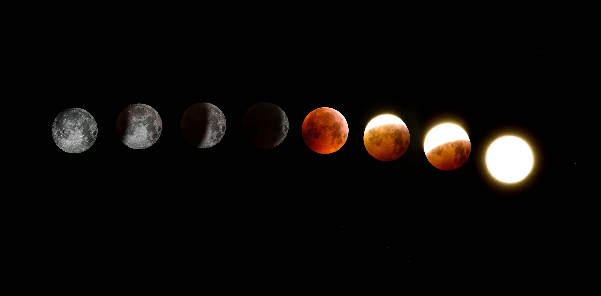

ArkaImmo : Votre refuge dans l’univers
Découvrez des habitats sur Terre, dans l’Arche orbitale, ou dans les colonies stellaires, grâce à notre IA avancée et nos visites holographiques.
Découvrez des habitats sur Terre, dans l’Arche orbitale, ou dans les colonies stellaires, grâce à notre IA avancée et nos visites holographiques.
TerraPod Alpha – Mars : La maison connectée de NeoPolis *Prix : 450 000 € *Surface : 150 m² *Chambres : 3 TerraPod Alpha est une maison révolutionnaire située dans les vastes plaines reconquises de NeoPolis, une nouvelle cité sur Mars. Cette propriété hautement connectée intègre des systèmes domotiques avancés, contrôlés par une IA qui optimise la gestion de l'énergie, de la température et même de votre quotidien. Parfaite pour les familles ou les professionnels de la recherche, TerraPod Alpha vous offre à la fois confort, sécurité et technologie de pointe. Imaginez vivre dans un habitat à la fois moderne et respectueux de l’écologie martienne.
